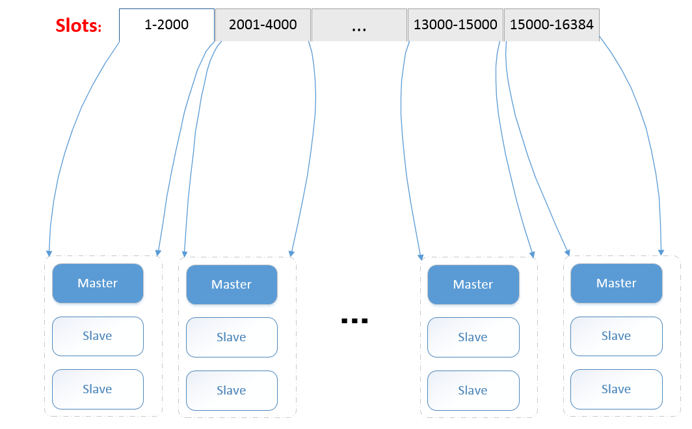

Big Data
Table of Contents
1 基本理论
全景图： 
1.1 系统的关键指标
1.1.1 性能
性能一般来说是两个指标：吞吐量和延迟。
- 吞吐量：主要是读(QPS)和写(TPS)
- 延迟：
1.1.2 扩展性(scalability)
理想的情况下，分布式系统应该线性扩展，也就是说系统的计算与存储能力应该随着系统节 点数量的增多而线性的增强。为了让系统能够线性扩展，系统必须进行数据分布
1.1.3 可用性(availablity)
可用性是指系统在遇到各种异常时仍然能够正常提供服务的能力。 分布式系统为了保证可用性就必须进行容错，而容错的唯一方法就是冗余，冗余又分为时 间冗余和物理冗余，前者就是计算系统中出错重试，后者就是存储系统中常用的一份数据复 制三份。在存储系统中一旦使用复制，那么就会出现一致性问题。也就是说更新数据时如何 保证数据多个副本之间的一致性。
1.1.4 一致性(consistency)
因为复制的存在，所以系统就存在一致性问题，主要由这几种：
- 强一致性：也就是说更新必须更新了所有副本后才返回，这样能够保证任何一个客户端 读任何一个副本时都能读到更新后的数据。
- 弱一致性：主副本更新之后就返回，后台会异步的更新其他副本,极端情况可能出现丢失 数据的情况
- 最终一致性：经过一段时间，客户端最终将能够读到更新后的数据，这其中就有一个不 一致窗口。
1.2 常用技术
1.2.1 数据分布
为了扩展性，必须将数据分布到多个节点，分布的方式主要有这几种：
- hash分布
- 顺序分布
1.2.2 复制
1.2.3 容错
因为分布式系统大多运行与X86服务器上，X86服务器性价比高，可是不够可靠，同时数据中 心也会有各种故障，系统必须进行故障检测和故障恢复：
- 故障检测: 最常见的检测方法是心跳，但是收不到心跳有很多情况，比如机器负载过大， 有可能是临时故障，也可能是永久故障，当机器发生故障后，我们需要迁移机器上的服 务，那么这时候必须保证机器不在提供服务，可是心跳检测无法保证这一点，所以在分 布式系统通常使用 租约,来进行故障检测。也就是说机器从master获得租约比如10分 钟，10分钟后又申请10分钟的租约，如果租约超时那么该节点就肯定没有提供服务了。 master必须在租约上加一个提前量，比如10分钟的租约可能需要等11分钟才能确定机器 已出故障。
- 故障恢复：当一台机器挂掉后，系统必须增加副本，如果挂掉的机器中有主副本那么必 须为其从备副本中指定一个主副本。
2 分布式文件系统
2.1 fastdfs
2.2 tfs
2.3 HDFS
2.4 GFS(google)
2.5 Ceph
3 分布式键值系统
3.1 Dynamo(amazon)
3.2 Tair(taobao)
3.3 Redis Cluster
3.3.1 一致性
3.3.2 数据分布
集群中有16384个slot，映射规则是直接直接CRC16然后取模(对hash tag会作特殊处理), 接 着手工将这16384个slot映射到物理机上。 
4 分布式文档数据库
4.1 基本原理
系统无预先定义的模式，每个document都有多个属性，更通俗的说文档就是 键值对的有续 集, 属性对应的值可以标量值也可以是嵌入的document或者数组，系统除了可以在主键上创 建索引外，也可以在其他属性上创建索引，你不仅可以根据主键搜索，也可以根据其它的属 性来搜索。这类系统的基本术语如下：
- document: 类似于关系数据库的row
- collection： 类似于关系数据库的table
- db：类似于关系数据库的db
这些在不同的文档数据库可能不一样，但是他们都有等价物。
4.2 MongoDB
4.3 CouchDB
5 分布式表格系统
5.1 基本原理
表格系统实际和关系数据库类似，只是它弱化了多表关联，对事务的支持很弱(分布式事务 要用到两阶段提交协议(2PC)，性能低，而且无法容忍节点出错)，也不支持二级索引，同时 它对模式也不像关系数据库那么严格，也就是说，同一张表的不同行可以有不同的数据类型。 另外表格模型可以看做是关系模型与文档模型的混合，表格模型需要定义列组，每一个列组 可以动态的添加属性。所以它不像文档模型那样完全不需要预先定义的模式，同是也不像关 系数据库那样需要非常严格的模式。
5.2 BigTable(google)
5.3 Megastore(google)
5.4 DynamoDB(amazon)
5.5 HBase
6 分布式关系数据库
6.1 Spanner(google)
6.2 OceanBase
7 分布式资源管理
7.1 设计动机
- 提高集群的资源利用率, 为了避免干扰,传统上不同的框架要部署到不同的集群, 这样就 可能造成一个集群资源紧张，一个集群的空闲资源很多，这就造成了资源浪费。分布式 的资源管理系统可以实现多个框架运行于一个集群中，提高了集群的利用效率。
- 服务的自动部署
7.2 发展路径
- 集中式：资源管理与应用管理放在一起，典型的就是MapReduce的JobTracker。
- 双层调度架构: 将资源管理与应用管理明确的区分开，yarn，mesos都是这类
- 共享状态架构；将资源调度模块简化成一些持久化的共享数据。
7.3 mesos
7.4 YARN
7.5 Borg(google)
8 分布式锁
8.1 zookeeper
8.2 chubby(google)
9 分布式消息中间件
9.1 kafka
9.2 metaq
10 CDN
CDN从本质上说是一个分布式缓存系统，它的基本使用流程是这样
- 你提供给CDN厂商你的域名A以及源ip，CDN厂商会给你一个域名B
- 给域名A添加一条CNAME记录到域名B
系统的工作原理是这样的：
11 分布式计算系统
11.1 批处理系统(离线处理)
这种一般以追求系统的吞吐量为目标。
11.1.1 MapReduce
11.1.2 Spark
11.2 实时流处理系统(在线处理)
这种系统一般以追求系统的延迟为目标。